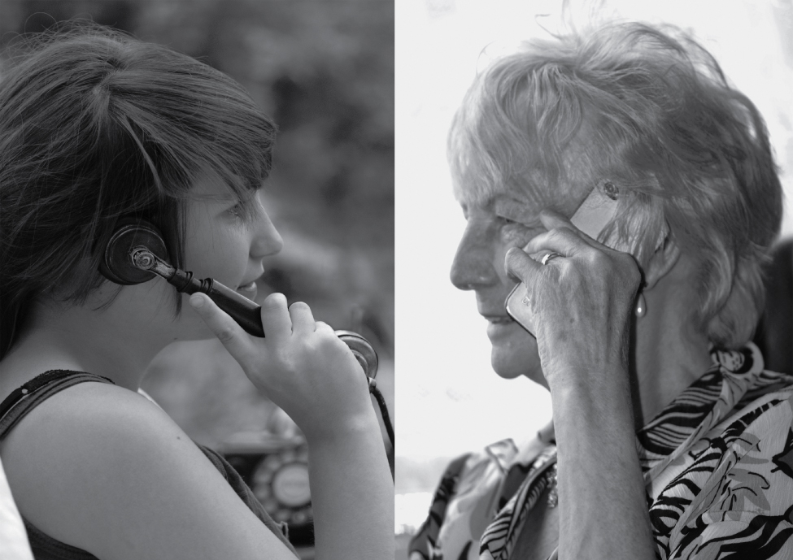
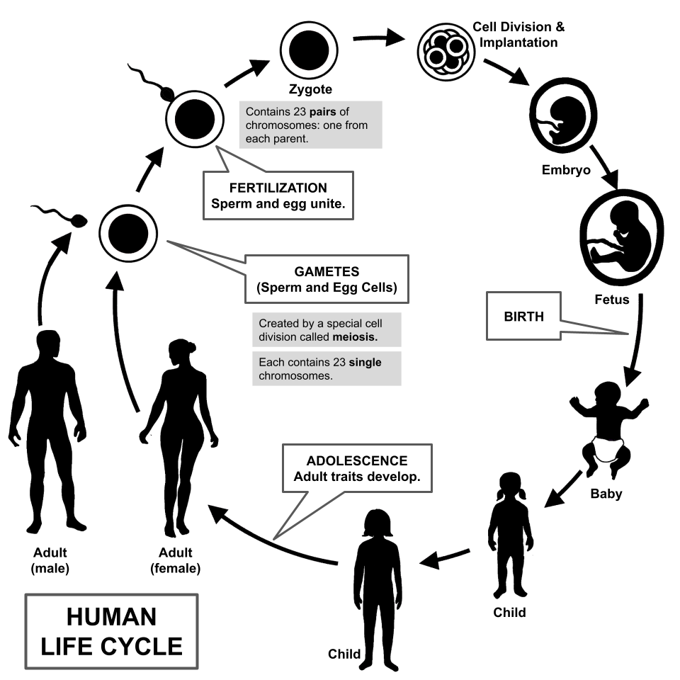
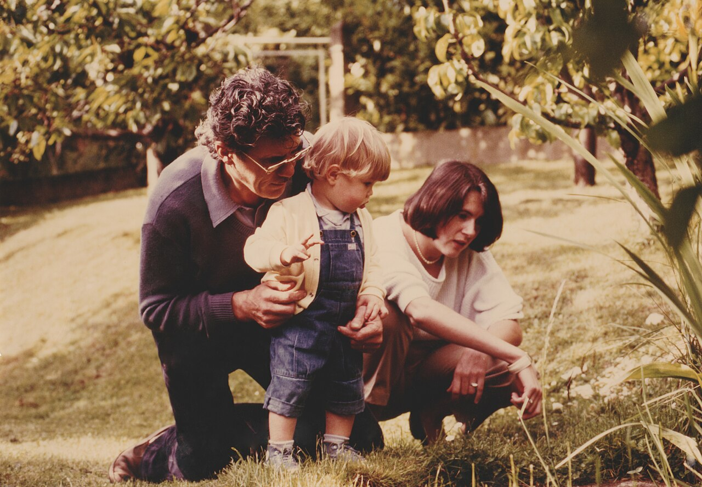

Middle Adulthood
Somewhere around forty, the body begins to keep score. Reading glasses appear on the bedside table, the mirror shows a few gray hairs, and the news arrives that a parent needs help. Yet middle adulthood — roughly ages forty to sixty-five — is far from a slow decline. It is often the season of greatest competence, authority, and reach: the years when accumulated knowledge peaks, when careers crest, and when a person becomes the generation others lean on from both sides. This chapter looks at the aging body and the midlife health that can be protected, at a mind that trades raw speed for deep expertise, at Erikson’s call to give something back, at the surprisingly stable self behind the “midlife crisis” headline, and at the crowded intersection of work and family that so many midlife adults stand in.
By the end of this chapter you can
- Define senescence and distinguish primary from secondary aging.
- Describe the physical changes of midlife, including menopause, the climacteric, and their health consequences.
- Contrast fluid and crystallized intelligence and explain how each changes across midlife.
- Explain the nature of expertise and how experts compensate for slowing processing speed.
- State Erikson’s stage of generativity versus stagnation and the ways generativity is expressed.
- Summarize the evidence on personality stability and evaluate the myth of the midlife crisis.
- Describe the midlife career peak, the sandwich generation, and how family relationships shift in these years.
Section 1The aging body and midlife health

Senescence: the gradual work of aging
Senescence is the gradual, universal biological aging of the body — the slow decline in the efficiency of organs and systems that begins, quietly, in early adulthood and becomes noticeable in midlife. It helps to separate two strands. Primary aging is intrinsic and largely unavoidable: it is written into the biology of the cell and unfolds in everyone who lives long enough. Secondary aging is the damage that accumulates from disease, disuse, and lifestyle — smoking, poor diet, sun exposure, inactivity — and it is far more preventable. Much of what people fear as “getting old” is actually secondary aging, which is exactly why midlife habits matter so much for what the later decades will feel like.
The visible signs are familiar. Skin loses collagen and elastin, so it thins and wrinkles; hair grays as pigment cells retire. Less visible but more consequential, the eye’s lens stiffens, producing presbyopia — the near-vision blur that sends nearly everyone to reading glasses in their forties — and the inner ear loses sensitivity to high frequencies, a change called presbycusis. Muscle mass slowly declines (sarcopenia), metabolism cools, weight tends to settle around the middle, and the walls of the arteries stiffen. None of this happens overnight, and none of it, at midlife, need be disabling.
Menopause and the climacteric
The most defined physical event of midlife is menopause, the permanent end of menstruation and fertility, dated only in retrospect after twelve consecutive months without a period. In industrialized countries the average age is about fifty-one. It does not arrive all at once: the years of hormonal turbulence leading up to it are called perimenopause, when estrogen levels fluctuate and then fall, producing the classic hot flashes, night sweats, disturbed sleep, and mood shifts. The broader hormonal transition of midlife — in either sex — is the climacteric.
The fall in estrogen has consequences beyond symptoms. It accelerates the loss of bone density, raising the risk of osteoporosis and fracture, and it removes some of the cardiovascular protection younger women enjoy. Men experience nothing so abrupt. Testosterone declines gradually — a slow drift sometimes loosely called andropause — and male fertility, though reduced, can continue for decades. Culture shapes the experience powerfully: in societies where older women gain status, menopause is reported with fewer distressing symptoms, a reminder that biology and meaning are braided together.
| System | Typical midlife change | Why it matters |
|---|---|---|
| Vision | Presbyopia — lens stiffens, near focus blurs | Reading glasses; near-universal by the mid-forties |
| Hearing | Presbycusis — loss of high frequencies | Trouble following speech in noisy rooms |
| Reproductive | Menopause / climacteric; falling sex hormones | End of fertility; bone & cardiovascular effects |
| Skeletal | Declining bone density | Osteoporosis and fracture risk, especially post-menopause |
| Muscular | Sarcopenia — gradual loss of muscle | Strength training slows it markedly |
| Cardiovascular | Arterial stiffening, rising blood pressure | Hypertension and heart disease become leading concerns |
Health at the peak of the middle years
Midlife is when chronic conditions first announce themselves — hypertension, type 2 diabetes, heart disease, arthritis, and rising cancer risk — and when the accounts of earlier decades come due. But it is equally the time when behavior has the most leverage. The “use it or lose it” principle is real: regular exercise preserves muscle, bone, and vessel, and protects the brain; not smoking, eating well, and managing stress can postpone or prevent much of what looks like inevitable decline. Health in these years is also profoundly shaped by circumstance — income, occupation, and access to care carve deep disparities — so midlife health is never a purely private achievement.
- Senescence is gradual biological aging; primary aging is intrinsic, secondary aging comes from disease and lifestyle and is largely preventable.
- Midlife brings presbyopia, presbycusis, graying, sarcopenia, and arterial stiffening — slow, not sudden.
- Menopause (average age ~51) ends fertility; falling estrogen raises osteoporosis and cardiovascular risk. Men have no equivalent abrupt event.
- Chronic disease emerges now, but exercise and lifestyle give midlife adults strong control over their trajectory.
Section 2Cognition in midlife

Two kinds of intelligence
The most useful idea for understanding the midlife mind, first drawn by Raymond Cattell and John Horn, splits intelligence in two. Fluid intelligence is raw mental horsepower — reasoning about novel problems, working memory, and the sheer speed of processing. It depends on the efficiency of the nervous system, peaks in the early twenties, and begins a slow, steady decline that becomes measurable in midlife. Crystallized intelligence is the opposite story: it is accumulated knowledge, vocabulary, verbal skill, and the well-worn judgment of a field. It rests on experience rather than speed, and it rises or holds steady well into the late middle years. The midlife mind, in short, is losing a little of one currency while getting steadily richer in the other.
This is why a middle-aged adult may take a beat longer to learn an unfamiliar app yet run rings around a twenty-five-year-old in any domain where knowing the terrain is what counts. K. Warner Schaie’s Seattle Longitudinal Study — which followed the same people for decades rather than comparing different age groups at one moment — found that several core abilities, including verbal ability, spatial orientation, inductive reasoning, and verbal memory, actually peaked in midlife, with only perceptual speed and numeric ability declining earlier. The longitudinal design mattered: earlier cross-sectional snapshots had confused true aging with cohort effects (the fact that later-born groups had more schooling), making midlife look worse than it is.
| Feature | Fluid intelligence | Crystallized intelligence |
|---|---|---|
| What it is | Reasoning, working memory, processing speed | Knowledge, vocabulary, expertise, judgment |
| Depends on | Efficiency of the nervous system | Accumulated learning and experience |
| Peak | Early adulthood | Late midlife or beyond |
| Midlife trend | Gradual decline | Stable or still rising |
| Example task | Solving an unfamiliar logic puzzle quickly | Defining rare words; diagnosing a familiar case |
Expertise: knowledge that outruns speed
The clearest advantage of the midlife mind is expertise — the deep, organized, domain-specific knowledge built by years of practice. Experts do not simply know more facts; they organize what they know differently. They perceive meaningful patterns where novices see clutter, group information into large chunks, and reach for automatic, well-rehearsed procedures, which frees mental resources for the hard part of a problem. A veteran nurse, mechanic, chess player, or teacher solves in a glance what a beginner must reason through step by step.
Expertise also explains how skilled performance survives the slow loss of fluid speed. Paul Baltes described the strategy as selective optimization with compensation: aging experts select the goals that matter most, optimize the skills that serve them through continued practice, and compensate for what has slowed with knowledge and shortcuts. The classic illustration is the concert pianist who, to hide slowing fingers, plays slow passages a touch slower so the fast ones seem faster by contrast. Midlife thinking also tends to grow more practical and dialectical — comfortable with contradiction, context, and shades of gray — a maturity of judgment sometimes called post-formal thought.
- Fluid intelligence (speed, reasoning) peaks early and slowly declines; crystallized intelligence (knowledge, vocabulary) holds or rises into late midlife.
- Schaie’s Seattle Longitudinal Study showed several abilities peak in midlife; cross-sectional studies had overstated decline via cohort effects.
- Expertise is organized, chunked, pattern-based knowledge that lets experts outperform faster novices.
- Selective optimization with compensation (Baltes) explains how skilled adults offset slowing speed with strategy and knowledge.
Section 3Generativity: giving something back

Erikson’s seventh stage
Erik Erikson placed a single great tension at the center of middle adulthood, the seventh of his eight psychosocial stages: generativity versus stagnation. Generativity is the concern for establishing and guiding the next generation — the wish to nurture, mentor, create, and leave something of value behind. Its opposite, stagnation (or self-absorption), is a slide into self-indulgence, a sense of going nowhere, of contributing nothing beyond oneself. When the tension resolves toward generativity, Erikson said, the emerging strength — the “virtue” of the stage — is care. It is worth placing the stage in the sequence: intimacy versus isolation precedes it in young adulthood, and integrity versus despair follows it in old age.
Generativity is not one thing. It shows up in biological form as bearing children, in parental form as raising them, in technical and occupational form as mentoring apprentices and passing on a craft, and in cultural form as contributing to institutions, communities, and traditions that will outlast the individual. A person with no children of their own can be intensely generative through teaching, volunteering, art, or leadership. What unites these expressions is the outward turn — from what can I get to what can I give and leave.
| Aspect | Generativity | Stagnation |
|---|---|---|
| Focus | The next generation; a legacy beyond the self | The self; comfort and personal gain |
| Feeling | Productive, needed, connected | Restless, empty, unproductive |
| Typical acts | Mentoring, parenting, creating, volunteering | Self-indulgence, disengagement, withdrawal |
| Resulting strength | Care | Rejectivity, self-absorption |
How generativity works — and why it matters
Dan McAdams gave Erikson’s idea sharper edges, describing generativity as a whole system: an inner desire for symbolic immortality and to be needed, a cultural demand that midlife adults take responsibility, and then concern, belief, commitment, action, and the narration of one’s life as a generative story. Highly generative adults, he found, tend to tell “redemptive” life stories in which hardship is transformed into something good that can be handed on. Generativity, in other words, is partly a way of making meaning of one’s own life.
It also pays. Adults who score high in generativity tend to report greater life satisfaction and psychological well-being, are more involved as parents and citizens, and are more invested in their communities and in politics that reach beyond their own lifetimes. Erikson did not claim the stage arrives on a fixed schedule — people can become generative early or late — but he was pointing at something real: the midlife adult stands at the hinge between the generations, and turning outward at that hinge is one of the strongest predictors of a life that feels worthwhile.
- Erikson’s seventh stage is generativity versus stagnation; its virtue is care.
- Generativity — guiding the next generation — can be biological, parental, occupational, or cultural, and does not require having children.
- Stagnation is self-absorption and a sense of unproductive stalling.
- McAdams showed generativity involves desire, cultural demand, concern, and action; it predicts well-being and civic engagement.
Section 4Personality and the myth of the midlife crisis

How stable is personality?
Ask whether people change in midlife and the honest answer is: less than you would think, and in orderly ways. Research using the Big Five traits — openness, conscientiousness, extraversion, agreeableness, and neuroticism — shows high rank-order stability in adulthood: the person who was more conscientious than her peers at thirty is very likely still more conscientious than her peers at fifty. At the same time there is gentle mean-level change in a consistent direction. On average, across midlife, conscientiousness and agreeableness rise and neuroticism falls — a drift toward greater emotional stability and social maturity that researchers call the maturity principle. People become, on the whole, a little steadier, warmer, and more dependable.
Alongside this stability, the self keeps working. Middle-aged adults revise their possible selves — Hazel Markus and Paula Nurius’s term for the selves we hope to become and fear becoming — often trading grand ambitions for more attainable, present-focused goals. Many report a subjective age younger than their years, feeling perhaps ten years younger than the number on the birthday cake. And a quiet stock-taking begins: a review of what has been accomplished and what time remains, which can sharpen priorities without any sense of crisis at all.
The midlife crisis, examined
The phrase “midlife crisis” was coined by Elliott Jaques in 1965 and popularized by Daniel Levinson, whose Seasons of a Man’s Life described a turbulent “midlife transition” of questioning and upheaval. The image stuck — the red sports car, the abrupt reinvention — and became a cultural cliché. But when researchers actually measured it, the crisis largely evaporated. The large MIDUS study (Midlife in the United States), led by Orville Gilbert Brim and colleagues, found that only a minority of adults report anything like a midlife crisis, and that when a “crisis” does occur it is usually tied to a specific event — a divorce, a job loss, an illness — rather than to reaching a particular age.
The fuller picture is that midlife is, for most people, a time of relative competence, control, and stability — a peak sense of mastery over one’s life. Difficult turning points are common, but they are not the same as a developmental crisis wired to the calendar. Well-being research even finds a gentle U-shaped pattern in some samples, with life satisfaction dipping modestly in the middle years before rising again — a nudge, not a collapse. The lasting lesson is that a stable, maturing self, not a predictable meltdown, is the real story of midlife personality.
| The popular image | What the evidence shows |
|---|---|
| A universal crisis strikes around 40–50 | Only a minority report a “crisis”; most feel stable and in control |
| Personality is upended | Traits are highly stable; change is small and toward greater maturity |
| Age itself triggers the turmoil | Distress, when present, tracks events (divorce, job loss, illness), not birthdays |
| Midlife is the unhappiest time | At most a modest U-shaped dip; mastery and life satisfaction are generally high |
- Big Five traits show high rank-order stability in adulthood, with small mean-level shifts toward maturity (the maturity principle): rising conscientiousness and agreeableness, falling neuroticism.
- The self stays active through revised possible selves and a younger subjective age.
- The midlife crisis (Jaques, Levinson) is largely a myth; MIDUS found crises are a minority experience, usually event-driven.
- Midlife typically brings a high sense of mastery, not developmental collapse.
Section 5Work, family, and relationships

Work at its peak
For many, midlife is the summit of working life. Earnings and authority tend to be highest, expertise is fully ripened, and job satisfaction often peaks as work becomes a settled part of identity rather than a scramble to prove oneself. Some adults reach a plateau and make peace with it; others feel a pull toward renewed meaning and change course — a “second act,” an encore career, or a return to school. These years are not without risk: age discrimination and the disruption of layoffs land hard in midlife, when reemployment can be slow. But for those with stable careers, midlife work often provides the platform from which generativity flows — mentoring the young, shaping an institution, training a successor.
The sandwich generation
The defining family fact of these years is captured in a single image: the middle-aged adult pressed between two generations who both need care. The sandwich generation is the cohort simultaneously supporting their own children — increasingly emerging adults still finding their feet, sometimes “boomerang” kids who return home — and their aging parents, whose health is beginning to fail. This double duty of caregiving falls disproportionately on women, who often become the family kinkeeper, coordinating everyone’s needs. The result can be genuine role strain: time, money, and energy stretched thin. Yet many in this position also describe deep meaning in it, experiencing the caregiving as an expression of the very generativity that defines the stage.
| Relationship | Common midlife shift |
|---|---|
| Marriage / partnership | Satisfaction often rises after children launch (the “empty nest” is frequently positive) |
| Adult children | Role changes from managing to consulting; “boomerang” returns are increasingly common |
| Aging parents | Caregiving begins; roles gradually reverse — the sandwich pressure |
| Grandchildren | Grandparenthood often begins, adding a new generative role |
| Friends & siblings | Ties often deepen; siblings reconnect around aging parents |
Relationships that shift and often deepen
The family relationships of midlife rearrange themselves, usually for the better. The much-feared empty nest — the departure of grown children — turns out, for most couples, to raise marital satisfaction rather than lower it, as partners rediscover time and attention for each other; the sad, purposeless empty-nester of legend is more exception than rule. Marital satisfaction across adulthood tends to trace a U-shape, dipping during the busy child-rearing years and climbing again afterward. New roles arrive: grandparenthood begins for many, offering generativity without the daily labor of parenting. Friendships and sibling bonds often deepen, and siblings frequently reconnect around the shared task of caring for parents. Divorce does still occur — “gray divorce” in the middle and later years has been rising — but the dominant theme of midlife relationships is continuity and, frequently, renewal.
- Midlife is often the career peak — highest earnings, authority, and job satisfaction — though age discrimination and layoffs pose real risks.
- The sandwich generation supports children and aging parents at once; caregiving falls heavily on women, who often serve as kinkeepers.
- The empty nest typically raises marital satisfaction; the departure of children is a normal, often welcome, developmental task.
- New roles — grandparenthood, renewed friendships, deepened sibling ties — commonly emerge, even as “gray divorce” rises.
The chapter in one breath
- Senescence is gradual aging; primary aging is intrinsic while secondary aging (from lifestyle and disease) is largely preventable — giving midlife adults real control over their health.
- Menopause (average age ~51) ends fertility, and the falling estrogen of the climacteric raises osteoporosis and cardiovascular risk; men have no comparable abrupt event.
- Fluid intelligence (speed, reasoning) slowly declines while crystallized intelligence (knowledge) holds or rises; Schaie’s longitudinal work shows several abilities peak in midlife.
- Expertise lets middle-aged adults outperform faster novices, and selective optimization with compensation offsets slowing speed with strategy.
- Erikson’s generativity versus stagnation defines the stage; guiding the next generation — its virtue is care — predicts well-being.
- Personality is highly stable with a gentle drift toward maturity; the universal midlife crisis is largely a myth, with distress tracking events, not age.
- Midlife brings a career peak, the sandwich generation’s double caregiving, and family shifts in which the empty nest usually raises marital satisfaction.
ReferenceWords worth knowing
A quick reference for the terms in this chapter — skim it now, or circle back whenever a word trips you up.
- Andropause
- The gradual, non-abrupt decline in testosterone in aging men; unlike menopause, it does not end fertility.
- Climacteric
- The broader midlife transition in reproductive hormones and fertility, of which menopause is the female milestone.
- Crystallized intelligence
- Accumulated knowledge, vocabulary, and judgment built from experience; stable or rising into late midlife.
- Empty nest
- The stage after grown children leave home; for most couples it raises rather than lowers marital satisfaction.
- Expertise
- Deep, organized, domain-specific knowledge that lets experts recognize patterns and outperform faster novices.
- Fluid intelligence
- Reasoning, working memory, and processing speed applied to novel problems; peaks early and slowly declines.
- Generativity
- Erikson’s midlife concern with guiding and establishing the next generation; yields the strength of care.
- Kinkeeper
- The family member — most often a midlife woman — who coordinates relationships and caregiving across the generations.
- Maturity principle
- The average adult drift toward higher conscientiousness and agreeableness and lower neuroticism.
- Menopause
- The permanent end of menstruation and fertility, dated after twelve months without a period; average age ~51.
- Midlife crisis
- A supposed universal upheaval around age 40–50; research finds it is a minority, usually event-driven, experience.
- Osteoporosis
- Loss of bone density that weakens bone and raises fracture risk, accelerated after menopause.
- Perimenopause
- The transitional years of fluctuating, then falling, estrogen that lead up to menopause.
- Possible selves
- Markus and Nurius’s term for the selves one hopes to become and fears becoming, which guide behavior.
- Presbycusis
- Age-related loss of hearing, especially for high frequencies.
- Presbyopia
- Age-related stiffening of the eye’s lens that blurs near vision, near-universal by the mid-forties.
- Primary aging
- Intrinsic, largely unavoidable biological aging written into the body’s cells.
- Sandwich generation
- Midlife adults simultaneously supporting their own children and their aging parents.
- Sarcopenia
- The gradual, age-related loss of muscle mass and strength, slowed markedly by resistance exercise.
- Secondary aging
- Preventable aging that results from disease, disuse, and lifestyle factors such as smoking and inactivity.
- Selective optimization with compensation
- Baltes’s strategy in which aging adults select key goals, optimize relevant skills, and compensate for losses.
- Senescence
- The gradual, universal biological aging of the body’s organs and systems.
- Stagnation
- The negative pole of Erikson’s seventh stage: self-absorption and a sense of unproductive stalling.